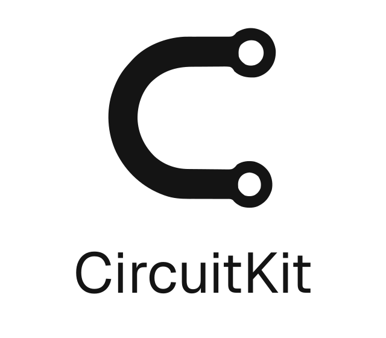
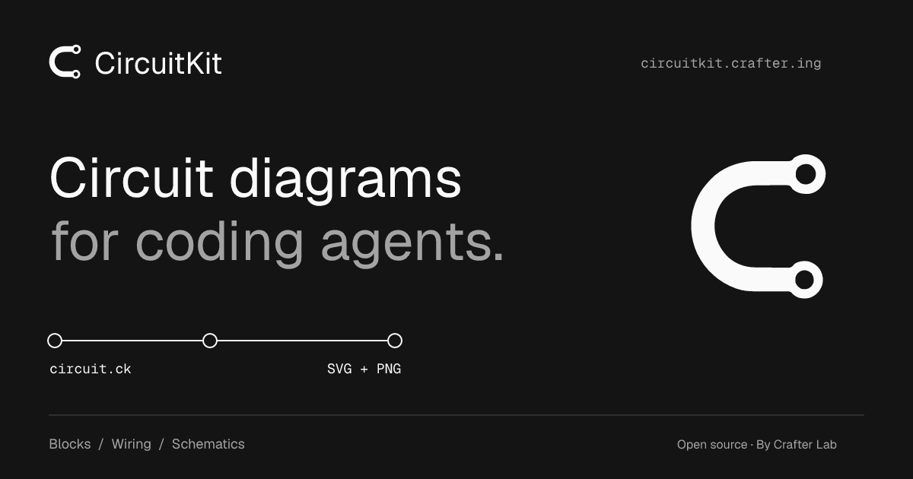
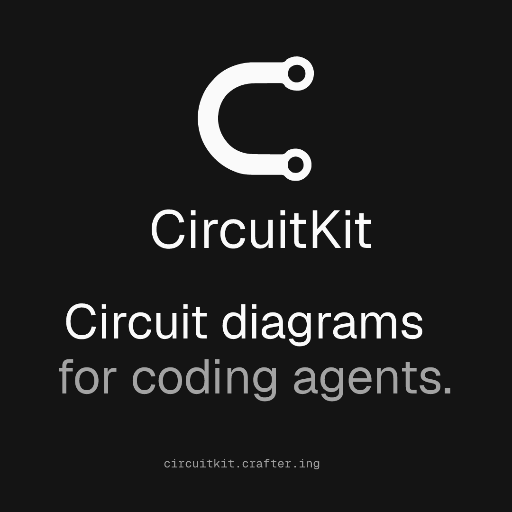
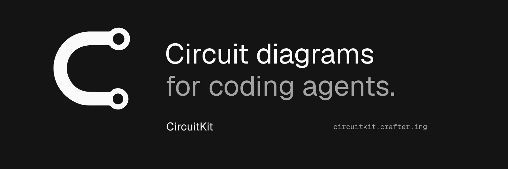
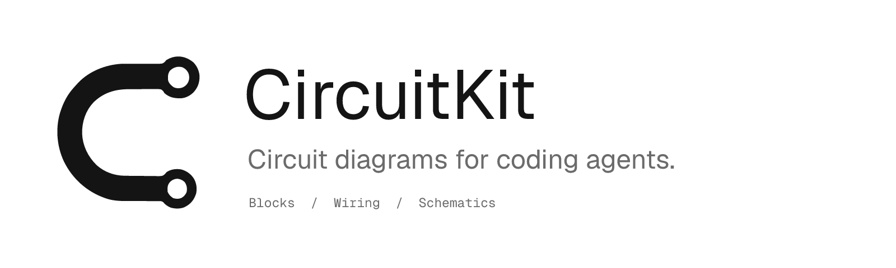

Circuit diagrams for coding agents.
CircuitKit,
everywhere.
A connection, two terminals, one clear identity.
The same mark from your browser tab to your next release.
The signature
Dark ink on light surfaces. Light ink on dark surfaces.
{kind=link}
{kind=link}
{kind=link}
{kind=link}

{kind=link}
{kind=link}
{kind=link}
{kind=link}
{kind=link}
{kind=link}
Small, still CircuitKit
Dedicated favicon sizes, avatars and app icons.
{kind=link}
{kind=link}
{kind=link}
{kind=link}
{kind=link}
{kind=link}
{kind=link}
{kind=link}
Keep it clear
A small set of rules keeps the identity consistent.
#141414#ffffff#fafafa#6b6b6bGeist Sans
Clear by design.
Aa Bb Cc 0123
Headlines, body copy and the wordmark.
Geist Mono
circuit.ck
SDA <-> SDA
Code, filenames and technical labels.
Give it room
Leave at least one terminal diameter of clear space around the symbol. Keep it separate from text and other marks.
Keep the shape
Preserve proportions and the two open terminals. Use the supplied assets without rotation, glow, gradients or extra traces.
Use the right size
Use the symbol at 24 px or larger, and the wordmark at 20 px or larger. Dedicated favicons cover smaller browser sizes.
Everything in one kit.
SVG, PNG, WebP, ICO, font licenses and this guide.
Ready to share
Outlined typography. Fixed compositions. Crisp exports.



